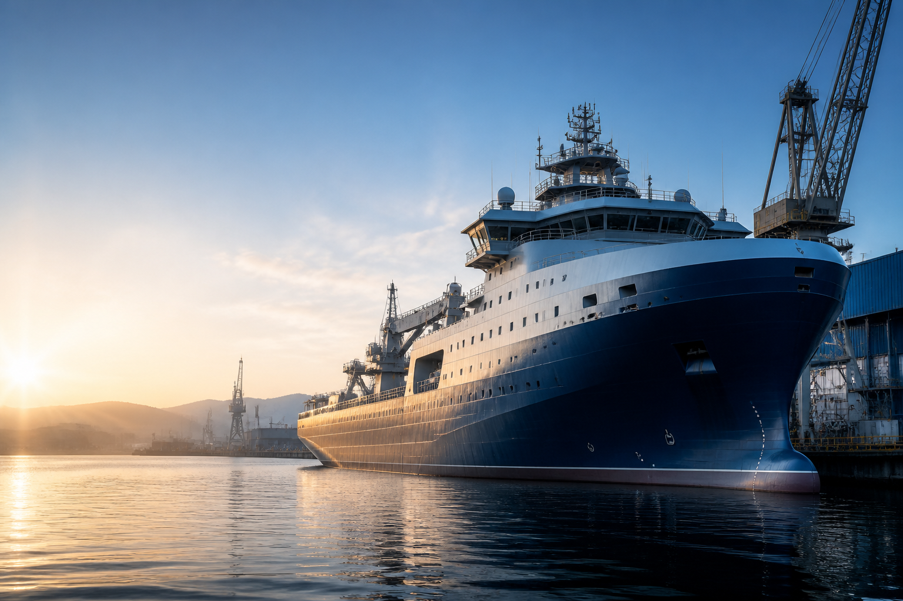

Positioning Statement
삼목기업은 조선·해양 현장에서 필요한 협업 밀도를 이해하는 회사라는 인상을 먼저 전달합니다
이 페이지는 단순 홍보보다, 현장과 함께 일할 수 있는 회사인지 빠르게 판단할 수 있도록 메시지를 설계했습니다. 그래서 소개 문구보다 먼저 작업 이해도, 운영 기준, 협업 태도가 읽히도록 구성했습니다.
Sammok Corporate Draft
삼목기업 조선·해양 협력사 소개 페이지
본 페이지는 한화오션 계열 대형 조선·해양 홈페이지의 안정적인 톤을 참고해, 삼목기업을 현장 대응력과 협업 실행력을 갖춘 실무형 협력 파트너로 소개할 수 있도록 정리한 기업소개 초안입니다.
선박의장 현장을 이해하고, 안전활동과 품질 운영을 함께 관리하며, 프로젝트 흐름에 맞춰 책임 있게 협업하는 파트너.
협업 포지션
조선·해양 협력 파트너
핵심 기준
안전 · 품질 · 납기
현장 강점
실행 중심 대응력

Marine Visual
선박과 도크 분위기를 함께 보여주면서, 삼목기업이 조선 현장 협업 흐름 안에 있는 회사라는 인상이 자연스럽게 전달되도록 설계했습니다.
현장 정체성
선박의장 현장을 이해하는 실무형 파트너
대외 인상
믿고 연결할 수 있는 협업 실행사
소개 방식
기업 신뢰 메시지와 검토 자료를 함께 제시
Partnership
조선·해양 프로젝트 협업 기반
Operation
현장 대응과 실행 흐름 중심
Standard
안전 · 품질 · 납기 기준 정렬
Communication
설명 자료와 운영 시안 동시 제공
협업 키워드
4축
안전 · 품질 · 납기 · 소통
리스크 시야
현장 중심
추락 · 협착 · 화기 · 통로
공개 자료
즉시 열람
대시보드 · 시안 · 회의자료
페이지 방향
기업형
협력사 신뢰 이미지를 강화
Value 01
현장을 이해하는 협업
Value 02
안전과 품질을 함께 보는 운영
Value 03
프로젝트 흐름에 맞춘 실행력
Positioning Statement
이 페이지는 단순 홍보보다, 현장과 함께 일할 수 있는 회사인지 빠르게 판단할 수 있도록 메시지를 설계했습니다. 그래서 소개 문구보다 먼저 작업 이해도, 운영 기준, 협업 태도가 읽히도록 구성했습니다.
Key Impression
현장을 이해하고 기준을 지키는 협력사
Message Focus
안전활동, 품질운영, 실행 커뮤니케이션
Use Case
대외 소개, 미팅 설명, 내부 검토 공유
한화오션처럼 스케일을 강조하는 대기업형 표현을 그대로 쓰기보다, 삼목기업이 협력사로서 어떤 방식으로 프로젝트 품질과 현장 안정성을 뒷받침하는지에 초점을 맞췄습니다.
선박의장 작업 흐름을 이해한 상태에서 공정, 작업환경, 협업 동선에 맞는 대응이 가능하다는 인상을 주도록 구성했습니다.
안전을 별도 문구로만 두지 않고, 품질·점검·개선조치와 한 흐름으로 보이게 하여 현장 운영 완성도를 강조합니다.
발주처·원청·현장 리더와 소통이 자연스럽게 연결되는 협업사 이미지를 만들어, 소개 페이지가 곧 신뢰 자료가 되도록 했습니다.
공식 사업소개 자료 확정 전 단계이므로, 현재는 공개된 컨설팅 맥락과 선박의장 현장 특성을 바탕으로 삼목기업의 소개 구조를 이해하기 쉽게 정리했습니다.
Business 01
선박의장 공정에서 발생하는 작업 준비, 설치, 현장 조율, 안전 확인 같은 실무 흐름을 중심으로 소개할 수 있습니다.
Business 02
위험요인 점검, 작업 기준 준수, 개선조치 관리, 보고 정리까지 연결되는 운영 지원 성격을 명확히 보여줄 수 있습니다.
Business 03
발주처와 원청, 현장 관리자 간 소통에 맞춰 일정·품질·안전의 균형을 잡는 협력사 역할을 강조하도록 설계했습니다.
실제 설립연도, 주요 수주, 조직 확대 이력은 공식 자료 확인 후 넣는 것이 맞습니다. 대신 지금은 연혁 섹션의 형식과 메시지 흐름을 먼저 준비해둘 수 있습니다.
Phase 01
조선·해양 현장 경험을 바탕으로 작업 이해도와 협업 대응력을 축적해온 흐름을 담는 자리입니다.
Phase 02
단순 시공을 넘어 안전활동과 품질관리의 중요성이 확대되는 흐름을 연혁 축으로 표현할 수 있습니다.
Phase 03
이번 AI 훈련로드맵과 대시보드 구상처럼, 현장 관리의 디지털 전환을 다음 단계로 연결하는 메시지를 넣을 수 있습니다.
협력사 홈페이지에서 중요한 것은 복잡한 설명보다, 현장에서 무엇을 우선하고 어떤 방식으로 관리하는지가 명확하게 전달되는 것입니다.
Suggested Core Message
“삼목기업은 조선·해양 현장의 작업 안전, 품질 기준, 협업 실행력을 함께 관리하는 실무형 협력 파트너를 지향합니다.”
01 Safety First
고소작업, 협착, 화기작업, 통로관리 같은 반복 리스크를 우선적으로 관리하는 메시지로 현장형 신뢰를 강화합니다.
02 Quality & Reporting
점검 결과, 개선조치, 교육, 보고를 하나의 흐름으로 묶어두면 협업사의 관리 수준이 더 분명하게 읽힙니다.
03 Execution
문장을 멋있게 꾸미기보다, 반장·관리자·협업 파트너가 바로 이해할 수 있는 표현을 중심에 두었습니다.
Open Resources
Next Expansion
추가 추천 항목
회사 연혁 · 사업영역 · 주요 실적 · 문의 정보
권장 보완 방식
현재 구조 유지 후 공식 문구와 수치만 정확히 교체
대외 활용
미팅 소개, 협업 제안, 자료 공유 링크로 활용
현재 페이지는 공식 정보 확정 전 검토용 초안이지만, 기업 소개 첫인상과 자료 연결 구조는 이미 갖추고 있어 미팅, 설명, 내부 검토, 협업 소개용으로 바로 활용 가능합니다.
현재 포지셔닝
조선·해양 협력사 소개형 홈페이지
보완 우선순위
공식 회사정보, 사업 설명, 사진 자료 반영
추천 다음 단계
실제 회사 로고·현장 사진·문의처 적용